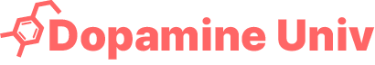

테토 교수
직진 · 주도 · 에너지

AI 심리테스트 · Web
카카오톡 대화만 올리면 AI가 성향을 분석해 나만의 심리 리포트를 써주는 초개인화 심리테스트 플랫폼.
테토 교수
직진 · 주도 · 에너지
에겐 교수
섬세 · 공감 · 사색
대표 콘텐츠는 에겐-테토 테스트. 카카오톡 대화를 올리면 AI가 참여자 각자의 성향을 분석해 웃긴 연구 보고서를 만들어 줍니다. MBTI처럼 정해진 유형이 아니라, 참여한 사람 수만큼 다른 결과가 나옵니다 — 2,000명이 하면 2,000개의 결과.
미리 해보기
3문항 미리보기. 정식 테스트에선 AI가 당신의 대화를 분석합니다.
에겐-테토를 시작으로, 좋아하는 만화 캐릭터가 되어보는 테스트처럼 다양한 테마의 캐릭터 심리테스트가 계속 추가됩니다. 전부 같은 AI 분석 엔진 위에서 돌아가요.